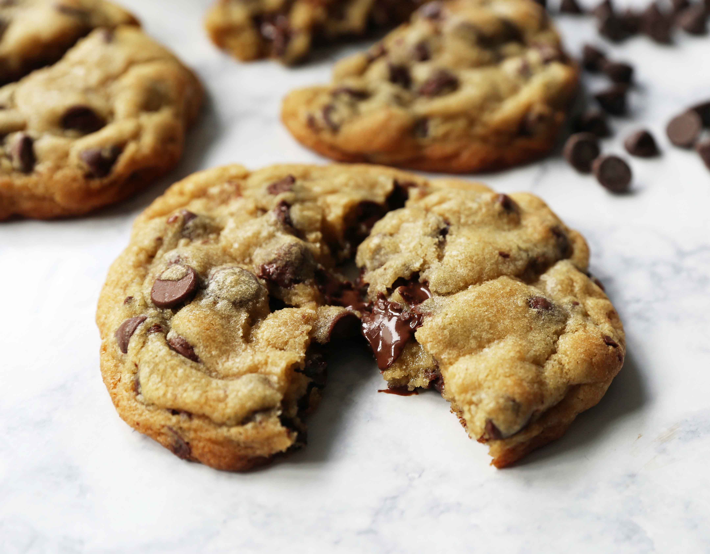

Chocolate Chip Cookies

Chocolate Chip Cookies (40 Servings)
Prep Time: 20mins
Cook Time: 10mins
Ingredients
- 1 cup softened butter
- 1 cup brown sugar
- 1 cup white sugar
- 2 tsp vanilla extract
- 2 tsp hot water
- 1 tsp baking soda
- ½ tsp sea salt
- 2 eggs
- 3 cups flour
- 1 cup crushed walnuts
- 2 cups chocolate chips
Instructions
- Gather ingredients, ensure butter is softened and the eggs are at room temp.
- Preheat oven to 350 degrees (175C)
- Use an electric mixer to beat butter, brown sugar, and white sugar together in a bowl. Continue until smooth.
- Beat the eggs in, ideally one at a time, follow up by stirring in vanilla extract.
- Pour baking soda into hot water to dissolve. Add to batter with sea salt.
- Stir in chocolate chips, crushed walnuts, and flour.
- Place spoonfuls of dough a couple inches apart onto clean baking sheets.
- Place in preheated oven for about 10min.
- Cool cookies on baking sheets before transferring to a wire rack.
- Serve immediately and store extras in an airtight container!